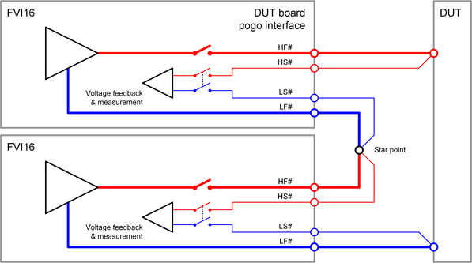

FVI16 stacked wiring
In order to achieve a higher output voltage, serial connection of up to three channels is allowed. This is called "stacking". Some specific electrical design rules must be considered for stacked FVI16 channels.
HF# and LF#
The force pogo pins of the stacking channel and the stacked channel must be connected together on the DUT board as shown in the diagram below. The DUT board layout must consider the maximum current of the stacked channels.
HS# and LS#
The sense pogo pins of the stacking channel and the stacked channel must be connected together on the DUT board as shown in the diagram below. A start point connection must be used to ensure a sufficient voltage regulation and measurement.
Stacking of three channels
For stacking of three channels, the middle channel has to be connected to two star points:- High side (HF# and HS#): Connect to the low side star point of the upper channel.
- Low side (LF# and LS#): Connect to the high side star point of the lower channel.
Example

The diagram above shows an example for stacking of two channels. The low force and low sense pogo pins of the upper channel and the high force and high sense pogo pins of the lower channel are connected together at a star point on the DUT board.
Functional changes
- Introduced in SmarTest 7.5.0